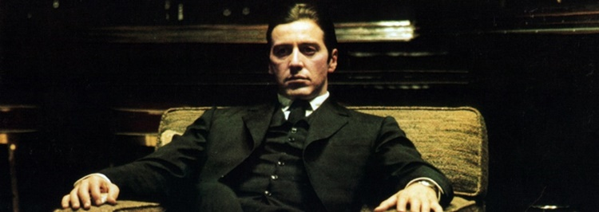
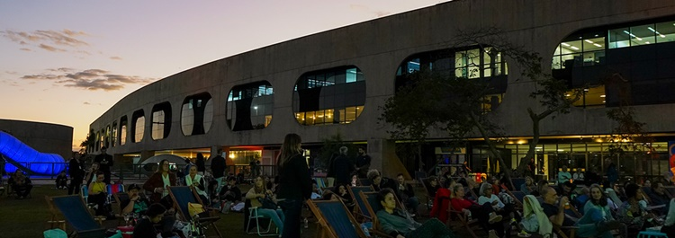
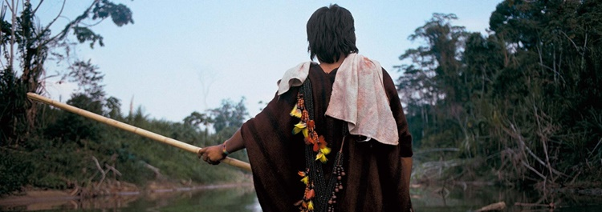

Cinema
Mostra Al Pacino (02/07/24 — 04/08/24)
This event is a celebration of the talent and career of an artist whose work has captivated the public for decades. Al Pacino, known for his role in iconic movies such as “The Godfather” trilogy, “Scent of a Woman”, “Dog Day Afternoon” and “Scarface” will be the protagonist of this cinematographic retrospective. The half-ticket costs R$5 and the full ticket costs R$10, and they can be bought in CCBBs official website. The current schedule is of two movie showings a day, from tuesday to sunday.
Music
Super Jazz festival (12/06/24 — 24/07/24)
The Super Jazz Festival celebrates the Afro Brazilian music and, well, jazz. Different bands, DJs, and singers ranging from big names to indie beginners unite together for this project to come to life in the grassy outdoor spaces of CCBB Brasília. It's a good opportunity to relax, take the edge off and enjoy the view of the dusk. The event is relatively short, starting at 5PM and ending at around 9H45PM.
Exhibits
Hiromi Nagakura in Amazônia, with Ailton Krenak (11/06/24 — 18/08/24)
This exhibit displays 120 photographs of the renowed japanese photographer Hiromi Nakagura, taken in trips with Ailton Krenak. The trips took place mainly in Amazonian territory, between 1993 and 1998. The exhibit allows the viewers to interact with objects taken from the villages and also offers a great deal of measures of accessibility, such as audiodescriptions, tactile boards and videolibras. According to Krenak: "the moments of intimacy and content between eternal friends are what inspired this photographical showing, mediated by the meetings with lovely people that welcomed us in their kitchens and canoes, their beaches of laughter and, finally, into their villages: Ashaninka, Xavante, Krikati, Gavião, Yawanawá, Huni Kuin and other communities near the River of Juruá and surrounding the Lavrado region in Roraima". Certainly an interesting exhibit for those who take an interest to the northern culture of Brasil, especially the indigenous ones.